Um guia simples para organizar clientes, eventos, recebimentos e despesas — no computador ou no celular.
Você não precisa aprender tudo de uma vez. Siga esta sequência sempre que fechar um novo trabalho.
| Área | Para que serve |
|---|---|
| Início | Mostra vendas, recebimentos, valores pendentes e resultado. |
| Eventos | Organiza contratos, serviços, datas e valores. |
| Financeiro | Registra recebimentos, despesas, contas e distribuição. |
| Clientes | Guarda os contatos ligados aos eventos. |
| Configurações | Mostra seu perfil, atalhos e a opção de sair. |
Use o e-mail em que você recebeu o acesso. No primeiro uso, siga as orientações da mensagem recebida para definir sua senha.
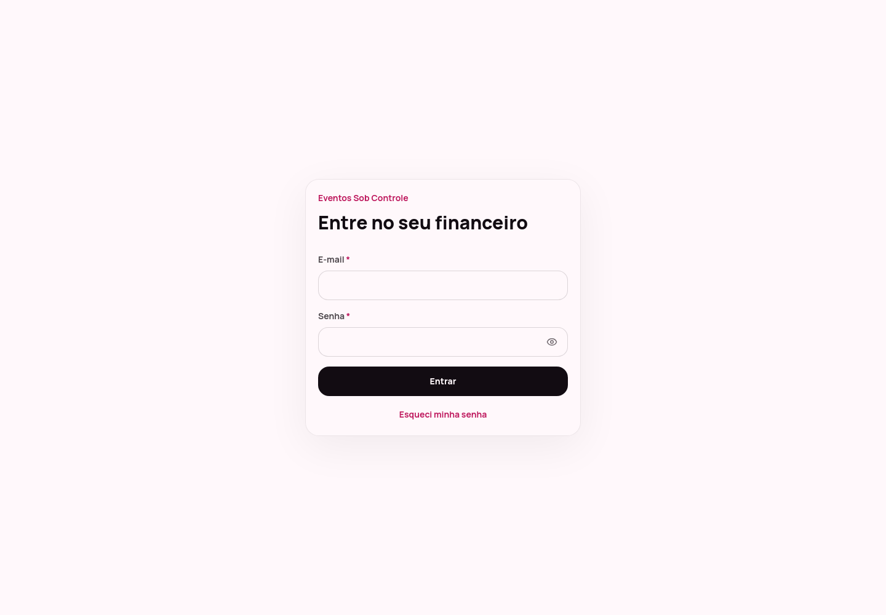
Ao entrar pela primeira vez, você encontra quatro tarefas práticas. O progresso muda conforme você usa a plataforma.
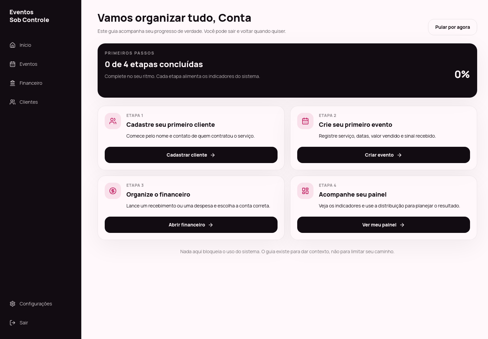
O painel responde rapidamente quanto você vendeu, quanto já recebeu e quanto ainda falta entrar.
| Indicador | O que significa |
|---|---|
| Vendido | Valor total dos eventos vendidos no período. |
| Recebido | Dinheiro que você já registrou como entrada. |
| A receber | Parte das vendas que ainda está pendente. |
| Resultado | Valor recebido menos as despesas registradas. |
| Eventos | Quantidade de eventos cadastrados. |
| Ticket médio | Média do valor vendido por evento. |
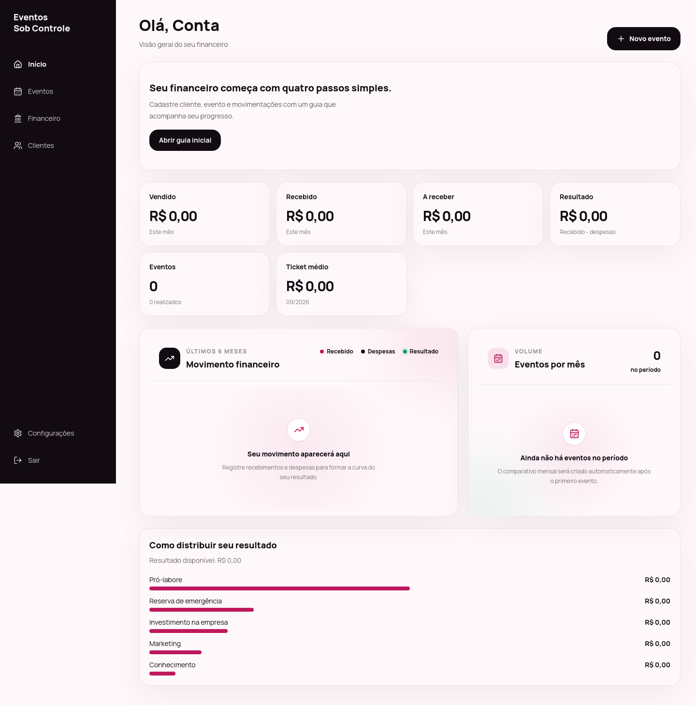
O cadastro do cliente mantém eventos, pagamentos e despesas ligados à pessoa correta.
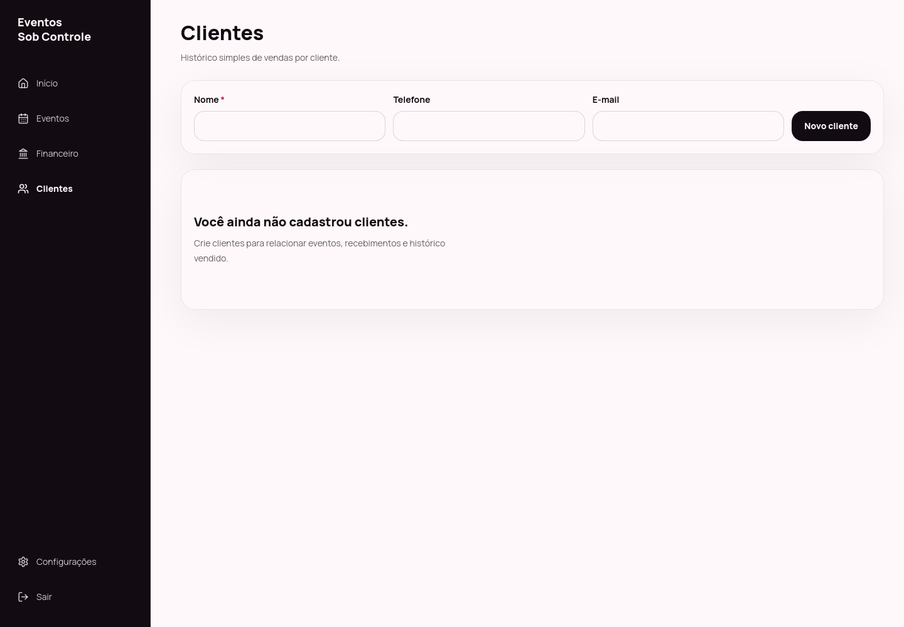
A lista mostra cliente, serviço, data, valor vendido, valor recebido, saldo a receber e resultado previsto.
Evento futuro ou ainda não concluído.
Trabalho concluído.
Evento preservado no histórico.
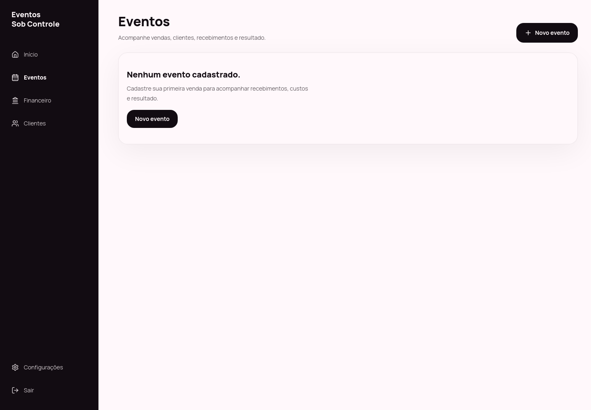
| Campo | Como preencher |
|---|---|
| Cliente * | Escolha um cliente já cadastrado. |
| Serviço * | Selecione o pacote ou serviço vendido. |
| Título | Use um nome fácil de reconhecer, como “Casamento Ana e João”. |
| Data da venda * | Dia em que o contrato foi fechado. |
| Data do evento | Dia e horário da realização. |
| Valor vendido * | Total combinado, mesmo que o pagamento seja parcelado. |
| Recebido agora | Valor que já entrou, como o sinal. |
| Custo de equipe inicial | Valor já previsto para a equipe deste evento. |
| Conta | Local em que o dinheiro entrou ou de onde saiu. |
| Observações | Horário, local e combinados que você queira consultar depois. |
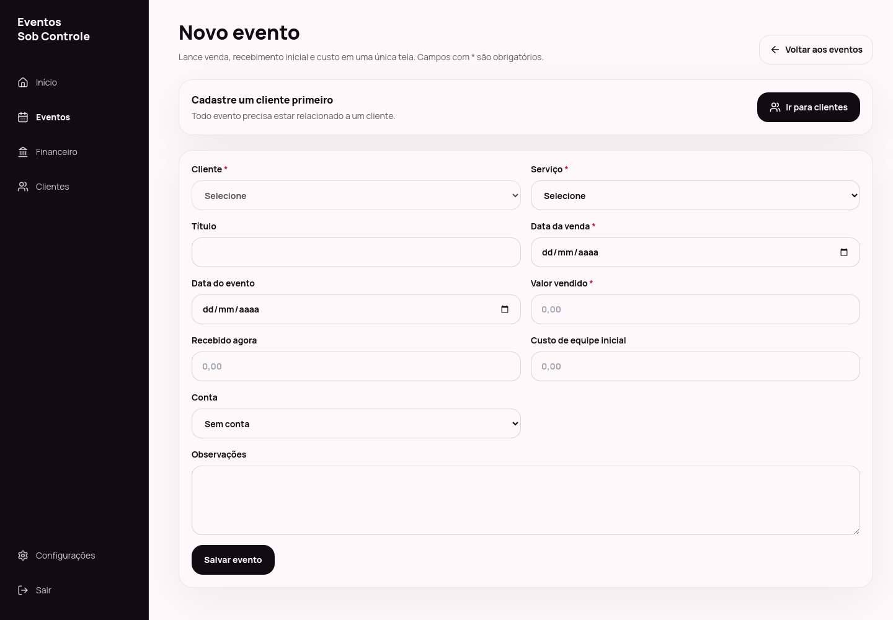
| A receber | Valor vendido − recebimentos ligados ao evento. |
|---|---|
| Resultado previsto | Valor vendido − despesas ligadas ao evento. |
| Resultado do caixa | Recebimentos − despesas efetivamente registradas. |
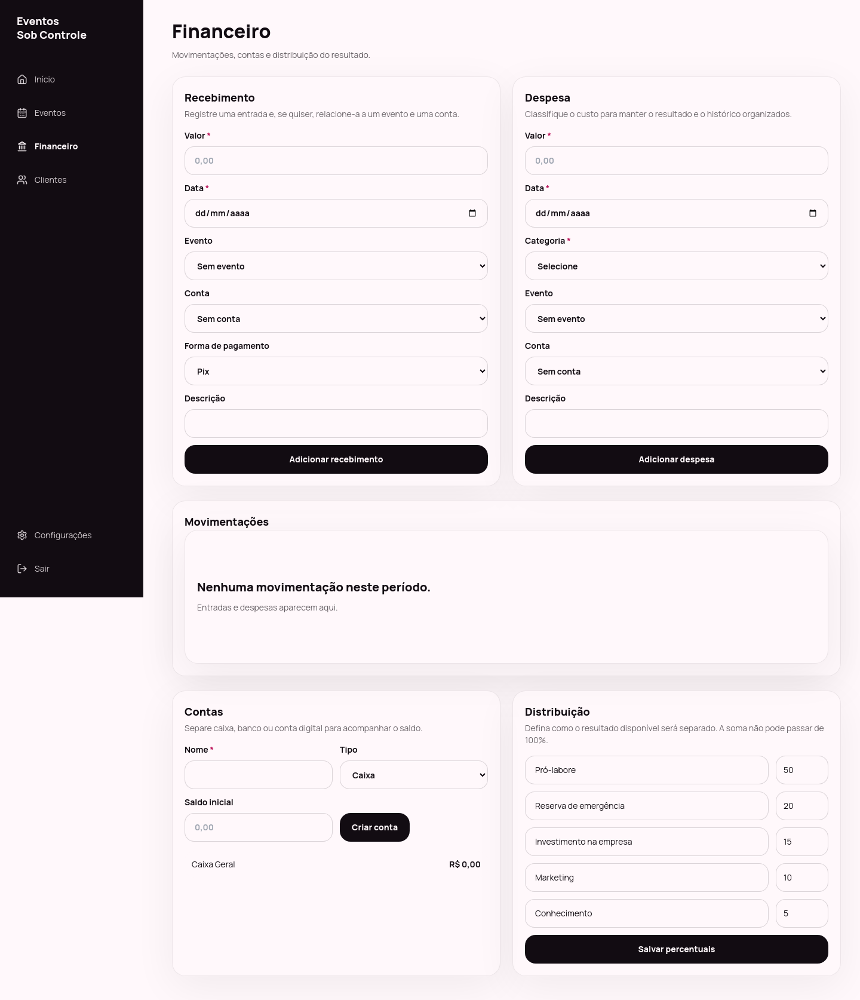
Crie uma conta para cada lugar onde o dinheiro fica: caixa físico, banco ou conta digital. O saldo considera o valor inicial e as movimentações ligadas a ela.
Os percentuais ajudam a planejar quanto do resultado será separado para cada objetivo. A soma não pode passar de 100%.
| Exemplo | Objetivo |
|---|---|
| Pró-labore | Sua remuneração pelo trabalho. |
| Reserva de emergência | Proteção para períodos com menos eventos. |
| Investimento na empresa | Equipamentos, melhorias e estrutura. |
| Marketing | Divulgação e conquista de clientes. |
| Conhecimento | Cursos e desenvolvimento profissional. |
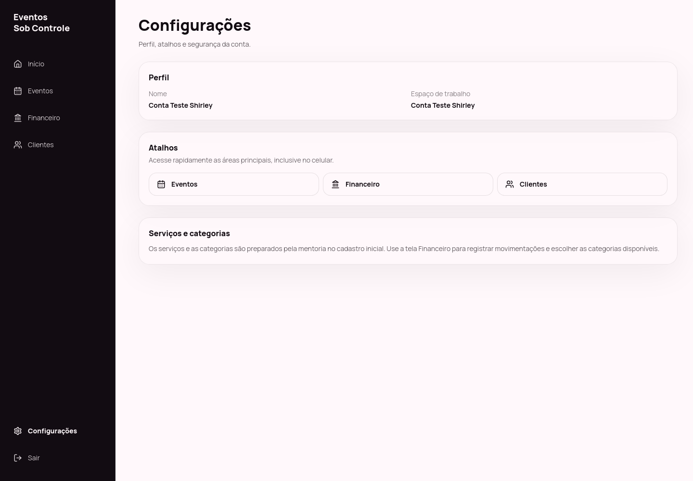
No celular, as telas ficam em uma coluna e a navegação aparece na parte inferior.
| O que você quer fazer | No celular |
|---|---|
| Trocar de área | Use Início, Eventos, Financeiro, Clientes e Mais na barra inferior. |
| Criar evento | Abra Eventos e selecione o botão destacado. |
| Ver contas e distribuição | Role a tela do Financeiro para baixo. |
| Sair com segurança | Use o ícone no topo ou “Sair do sistema” em Mais. |
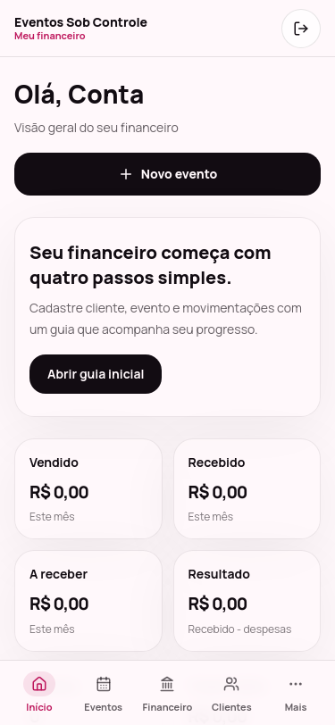
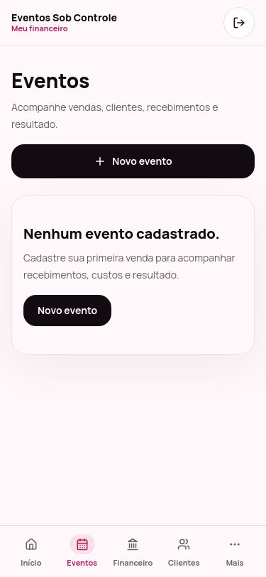
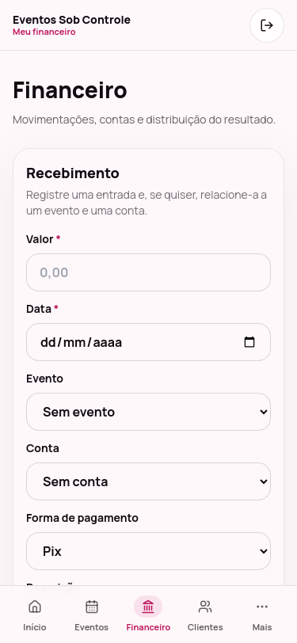
Cadastre um evento e registre recebimentos e despesas. O painel depende dessas informações.
Confirme se existe um cliente cadastrado e se todos os campos com * foram preenchidos.
Confira se você selecionou a conta correta ao registrar a movimentação.
Verifique se todos os recebimentos foram ligados ao evento e se o valor vendido está correto.
Cada percentual deve ficar entre 0 e 100, e a soma não pode passar de 100%.
Confira e-mail, senha e espaços extras. Se necessário, use “Esqueci minha senha”.
Cadastre o cliente, crie o evento e mantenha o financeiro em dia. O restante, a plataforma organiza para você.
Este guia foi preparado para as alunas da formação e usa imagens reais da plataforma. Alguns números podem variar conforme os dados cadastrados em cada conta.